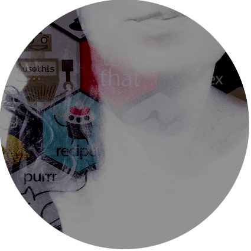
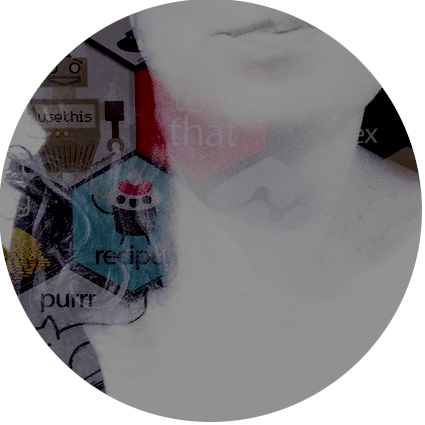

Textbooks
From 2011 to 2015 I taught an introductory statistics class at the University of Adelaide using the R statistical computing language, and wrote my own lecture notes, pitched at undergraduate psychology students. It got a little out of hand, turning into a 600 page book, which I’ve made freely available under a Creative Commons licence at https://learningstatisticswithr.com
The book covers the basics of psychological research methods, R programming, data wrangling, descriptive statistics, R graphics, orthodox and Bayesian inference, t-tests, chi-square tests, factorial ANOVA and multiple regression in a friendly (and I hope helpful) way.
To my surprise, the book has been rather popular, and has been adapted in several ways. David Foxcroft adapted it to create a Jamovi version, and Tom Faulkenberry adapted that to create a JASP version. Jean-Marc Meunier was kind enough to make French translation of the Jamovi book, which is so cool, and I’ve heard rumours that there are Japanese and Spanish translations in the works elsewhere. Because the creative commons allows more radical adaptations, there’s a really nice book on Answering Questions with Data by Matt Crump has uses parts of the material. A modernised tidyverse-focused version of the book is also in the works.
As yet, no-one has created the Learning Statistics with an Abacus adaptation I have dreamt of all these years.